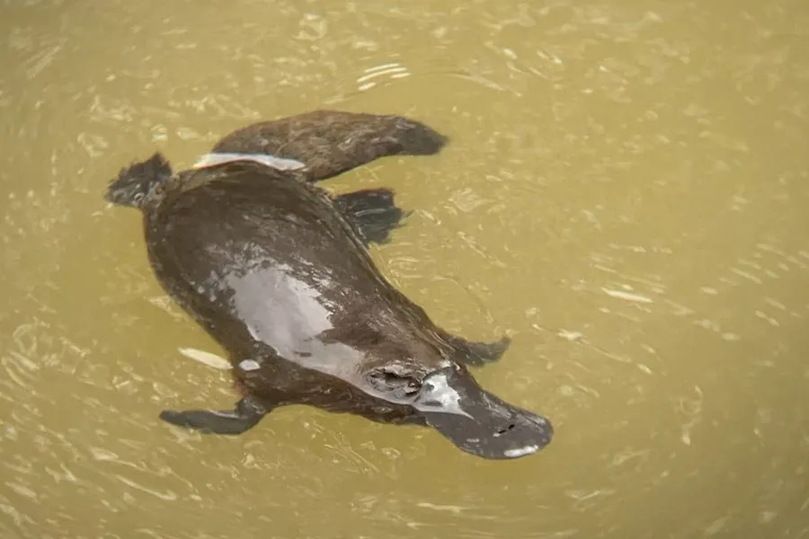

哺乳动物 · 动物界
鸭嘴兽 Ornithorhynchus anatinus

澳大利亚特有的卵生哺乳动物，鸭嘴状的吻部布满电感受器，雄性后足带有毒距，是研究演化的活化石。
- 分类
- 门脊索动物门纲哺乳纲目单孔目科鸭嘴兽科属鸭嘴兽属
- 栖息环境
- 澳大利亚东部与塔斯马尼亚的河流、溪流和静水池塘，岸边挖洞筑巢
- 地理分布
- 澳大利亚东部和塔斯马尼亚的淡水水域
- 保护级别
- IUCN 近危（NT）
物种志
鸭嘴兽体长 0.3–0.48 米，体重 0.7–2.4 kg，雄性大于雌性。它的吻部宽扁如鸭嘴，覆有柔软皮肤，上面密布电感受器；身体覆棕褐色浓密短毛，四肢有蹼，后足有扁平爪，尾宽大如桨，储存脂肪。
鸭嘴兽栖息于澳大利亚东部和塔斯马尼亚的河流、溪流与静水池塘，多在夜间潜入水底觅食，靠电感受器探测虾、水生昆虫幼虫和小鱼产生的微弱电场，再用角质板把食物磨碎。它没有牙齿，也没有乳头，母兽分泌的乳汁从腹部皮肤渗出供幼仔舔食。鸭嘴兽在水中交配，雌兽在岸边洞穴中产 1–3 枚软壳卵，孵化期约 10 天。雄性后足有连接毒腺的角质距，可分泌毒素。由于栖息地干涸与污染，其局部种群正在下降。
形态与习性
- 食性水生昆虫幼虫、虾类和小鱼，靠电感受器探测
- 体长0.3–0.48 m，尾长 0.1–0.15 m
- 体重0.7–2.4 kg
- 寿命野外约 12–15 年
- 繁殖卵生，每窝 1–3 枚软壳卵，孵化期约 10 天
- 特殊结构吻部有电感受器，雄性后足有毒距
- 哺乳方式无乳头，乳汁从腹部皮肤渗出
趣味知识
- 鸭嘴兽是极少数会产卵的哺乳动物，却用乳汁哺育幼仔。
- 它的鸭嘴状吻部布满电感受器，能感知猎物发出的微弱电场。
- 雄性鸭嘴兽后足长有角质毒距，是少数有毒的哺乳动物之一。
- 鸭嘴兽没有牙齿，靠角质板把食物磨碎后吞咽。